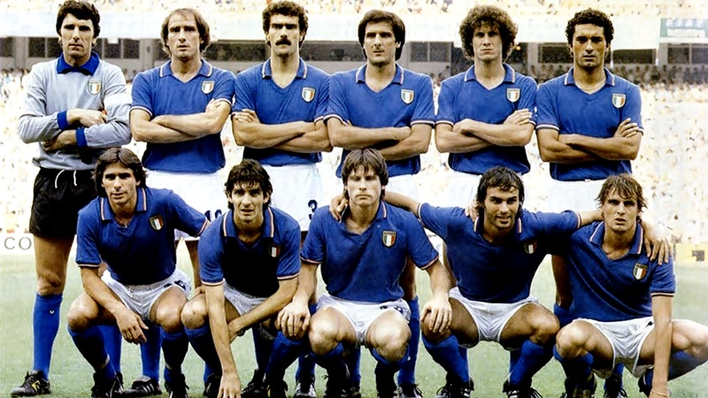
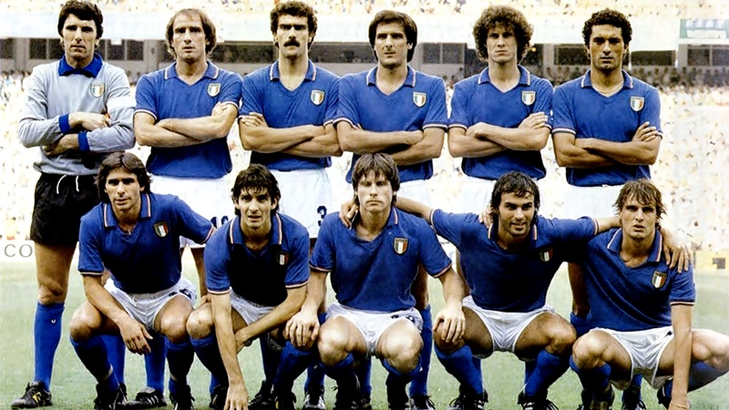
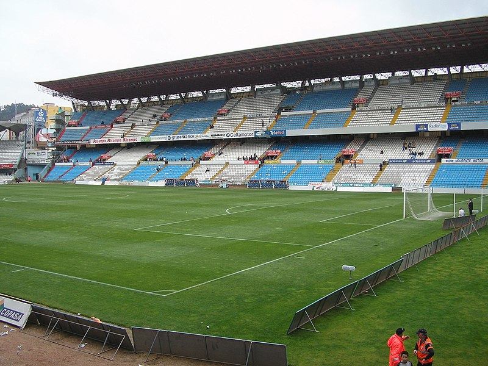
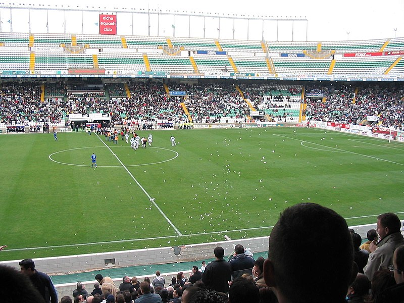

COPA DO MUNDO DE 1982

fase 1
A Argentina, campeã mundial, decepcionou. Os portenhos fizeram o jogo de abertura contra a Bélgica e perderam
por 1 a 0. Classificaram-se em segundo lugar no grupo após vencerem a Hungria e El Salvador. Neste grupo,
por um jogo a Hungria reviveu a máquina de Ferenc Puskás e cia. de 1954 e venceu El Salvador por 10 x 1. A
Bélgica ficava com a primeira vaga no grupo, confirmando que o vice-campeonato na Eurocopa de 1980 não fora
acidente.
No grupo da Alemanha Ocidental, ocorreu uma das maiores zebras da história das copas. A Argélia, estreante
em copas do mundo, ganhou dos germânicos por 2 a 1. A seleção alemã, em seguida, goleou o Chile e venceu sua
"irmã", a Áustria, por 1 a 0, no chamado "jogo da vergonha". Como o resultado classificava ambos os times,
alemães e austríacos não tiveram escrúpulos em tocar a bola de um lado para outro, sob vaias e protestos do
público. Os argelinos, mesmo brilhantes, com 2 vitórias em 3 jogos acabaram eliminados.
A França perdeu por 3 a 1 da Inglaterra na estreia, mas mesmo com uma campanha irregular conseguiu a
classificação. Empatou com a Tchecoslováquia e ganhou do Kuwait por 4 a 1. Neste jogo, um sheik kuwaitiano,
integrante da comissão técnica, invadiu o campo para protestar contra um gol da França e o árbitro anulou o
gol. A Inglaterra com futebol sem criatividade, mas objetivo passou facilmente em primeiro lugar, pois
venceu os tchecos por 2 x 0 e o Kuwait por 1 x 0, sendo a única seleção além do Brasil a bater os 100% de
aproveitamento na primeira fase do mundial 82.
A Espanha, dona da casa, teve uma estreia decepcionante, mostrando que a "fúria" não iria longe na sua Copa
em casa. Empatou em 1 x 1 contra a estreante em copas, Honduras, com um gol de pênalti no final da partida.
Ficou em segundo lugar, em um grupo que foi liderado pela modesta Irlanda do Norte, que venceu os donos da
casa por 1 x 0, após empatar com a Iugoslávia 0 x 0 e Honduras por 1 x 1. A Iugoslávia, mesmo sendo uma das
favoritas do grupo não se classificou após derrota por 2 x 1 para a Espanha e vitória magra por 1 x 0 sobre
Honduras; a derrota para os norte-irlandeses foi fatal para os eslavos do sul.
Já o Brasil, grande favorito ao título, estreou contra a União Soviética. Foi um jogo duríssimo, com a
defesa brasileira falhando muito, além de um gol mal anulado do lado soviético, sem contar o pênalti não
marcado para a seleção vermelha. Os soviéticos fizeram 1 a 0 numa falha de Waldir Peres. No segundo tempo, o
Brasil colocou a bola no chão e o gênio de Sócrates explodiu no gol de empate: Sócrates driblou dois
jogadores e soltou uma bomba no ângulo. Aos 43 minutos o gol da vitória, Éder Aleixo dispara um violento
chute no ângulo de Rinat Dasayev: Brasil 2 a 1. Em seguida, a equipe de Telê venceu a Escócia, por 4 a 1 -
foi a segunda virada dos Canarinhos. Zico brilhou com um bonito gol de falta. Contra a Nova Zelândia, a
seleção novamente venceu por goleada, 4 a 0, com o Brasil desfilando em campo. A URSS após empate com a
Escócia acabou ficando com a segunda vaga, pois tinha melhor saldo que a seleção britânica. Uma vez mais os
escoceses não passavam da primeira fase de um mundial.
Em Vigo, a Itália dava um vexame após outro. Foram 3 péssimos jogos na primeira fase da Copa. Empate com
Polônia, Peru e Camarões, e a Azzurra só se classificou por ter feito um gol a mais que os africanos. A
Polônia de Lato e Boniek goleou o Peru por 5 x 1 e ficou com o primeiro lugar do grupo. O clima da seleção
italiana era tão ruim, que o técnico Enzo Bearzot ordenou que seus jogadores não dessem entrevistas, e não
lessem os jornais, para que não se deixassem contaminar pelo pessimismo da imprensa italiana.
fase 2
A Copa de 1982 contou com um regulamento único. Como eram 6 grupos de 4 times, e apenas os 2 primeiros se
classificavam, 12 times formaram 4 grupos de 3 times na segunda fase, de onde os campeões de cada grupo
fariam a semifinal.
No grupo da França, a seleção de Michel Platini despachou a Áustria e a Irlanda do Norte. Já a Polônia de
Lato e Boniek, voltava a fazer uma copa comparável com a célebre campanha de 1974, e eliminava a Bélgica e a
URSS, ganhando um lugar na semifinal.
A Alemanha Ocidental sepultou o sonho espanhol do primeiro título e despachou a "Fúria", além do English
Team, provando, uma vez mais, o grande poder de recuperação das seleções alemãs, como em 1954 e 1974.
Na segunda fase, o Brasil enfrentaria Argentina e Itália. Primeiramente, o Brasil atropelou a Argentina, se
vingando de 1978. Com uma exibição irrepreensível, o time comandado em campo por Zico, envolveu a defesa da
Argentina e chegou a fazer 3 x 0. A emblemática imagem de Júnior na beira do campo, sambando ao som da
batucada da torcida, dava provas do poderio do futebol-arte do Brasil. Nesse jogo, o então jovem Maradona,
não resistiu à incapacidade de reação do time portenho e foi expulso após desferir um verdadeiro golpe de
arte marcial em Batista. No final o Brasil venceu por 3 x 1, em uma humilhante despedida para os campeões do
mundo, de malas prontas para retornarem à Buenos Aires.
O outro time do grupo, a Itália, jogou três jogos péssimos na fase de classificação, porém, na hora da
verdade, a mística da Azzurra incendiou a equipe, que disparou rumo ao tricampeonato. A seleção europeia
venceu o primeiro jogo contra a Argentina por 2 a 1, complicando e muito a situação dos portenhos, que, como
já visto, perderam do Brasil. Depois, viria um dos grandes jogos da Copa, para muitos, a grande partida, que
definiu os rumos do mundial.
O Show de Paolo Rossi no Sarriá
Brasil e Itália se enfrentaram pelo terceiro jogo da segunda fase em seu grupo. Como a Argentina tinha
perdido por 2 x 1 para a Itália, e por 3 x 1 para o Brasil, a seleção canarinho, aquela altura tida como
favorita ao título, tinha a vantagem do empate para se classificar em primeiro no grupo. A maioria dos
torcedores brasileiros acreditava em uma vitória tranquila, pois a Itália, até então, só havia vencido um
jogo na copa, enquanto o Brasil era o único com aproveitamento de 100%. Logo no início da partida, aos 5
minutos, ataque da Itália com um cruzamento vindo da esquerda e cabeceio do artilheiro Paolo Rossi, com a
defesa brasileira apenas assistindo a cabeceada do italiano. Seguiu o jogo, o Brasil não se intimidou. Ainda
no 1º tempo, Zico se livra de Claudio Gentile e toca para Sócrates, o "doutor" invadiu a área e chutou
colocado e forte, empatando o confronto. A Itália marcava forte a saída de bola do Brasil, e forçava o erro
da seleção. Em uma reposição de bola do goleiro brasileiro Waldir Peres, Toninho Cerezzo fez um toque
lateral para o meio, entre Luisinho e Falcão, o veloz Paolo Rossi tomou a bola, encaminhou-se de frente para
o gol brasileiro e chutou forte, marcando 2 x 1.
Mas o "time canarinho" ainda tinha todo o 2º tempo para empatar e se classificar. Foi no segundo tempo que o
time de Telê pressionou o adversário buscando o empate. Em um lance memorável Júnior saiu com a bola da
lateral esquerda para o meio, tocou a bola para Falcão na entrada da área, Cerezzo fez uma ultrapassagem que
levando a marcação e abrindo espaço na defesa da squadra azzurra, e Falcão chutou forte empatando o
confronto: 2 x 2. Aquele resultado era o suficiente para a classificação do Brasil. Mas o lance fatal viria
logo em seguida: escanteio para a Itália, o time brasileiro, que só jogava no ataque, estava todo dentro da
área. Cobrado o escanteio, a bola sobrou na entrada da área, um chute é desferido e a bola achou ele, Paolo
Rossi, que desviou a trajetória e matou Valdir Peres: 3 x 2. Detalhe: Junior estava embaixo da trave
brasileira dando condições ao matador italiano Rossi. Depois disso tudo, a Itália teve um gol legítimo mal
anulado pela arbitragem (que aumentaria o placar da derrota brasileira para 2 X 4) e o Brasil teve uma
última chance no finalzinho da partida, mas o veterano e excepcional goleiro Dino Zoff confirmou a derrota
brasileira ao fazer uma defesa espetacular em uma cabeçada certeira de Oscar.
 tragedia do sarria eliminação do brasil na copa de 82
tragedia do sarria eliminação do brasil na copa de 82
semifinal
A Alemanha passou à final após uma vitória épica contra a França de Platini, no outro jogo que marcou a Copa,
ao lado de Brasil x Itália. No tempo normal, 1 a 1. Na prorrogação, a França chega a fazer 3 a 1. Mas, os
alemães, liderados por Rummenigge, buscaram o resultado e empataram o jogo em 7 minutos, numa das mais
espetaculares reações de todos os tempos. Na primeira decisão por pênaltis da história, deu Alemanha. O lado
lamentável foi a covarde agressão que o goleiro alemão, Harald Schumacher, cometeu sobre Patrick Battiston,
que caiu no chão sem sentidos, o que fez muitos acreditarem que o atacante francês havia morrido.
A Itália venceu a Polônia, em Barcelona, por 2 x 0, dois gols de Paolo Rossi, agora carrasco também dos
poloneses, que perderam mais uma vez a chance de chegar a uma final de copa.
Na decisão do terceiro lugar, a França sucumbiu frente aos "Águias Brancas", que igualariam o 3º lugar de
1974: Polônia 3 x 2 França.
final
A final da Copa aconteceu no Estádio Santiago Bernabéu, em Madri. Mas o que era para ser um clássico virou um
passeio italiano. A Azzurra passeou em campo, embalada pelas vitórias sobre Argentina e Brasil, e não tomou
conhecimento da Alemanha. O 1º tempo termina com 0 x 0. No 2º tempo porém, a seleção italiana abriu 3 x 0,
sendo o primeiro gol do carrasco Paolo Rossi, que assim se tornava o artilheiro do torneio, com 6 gols. A
Alemanha ainda descontou, mas já era tarde para a reação do time germânico. A Itália era mesmo a campeã,
consagrada em cima da Argentina (campeã do mundo), do Brasil (favorito ao título) e da Alemanha (sua maior
rival).
 arnaldo cezar coelho o primeiro arbitro brasileiro a apitar uma final de copa

italia tri-campeã mundial
arnaldo cezar coelho o primeiro arbitro brasileiro a apitar uma final de copa

italia tri-campeã mundial
Estadios da copa 1982
Estádio Santiago Bernabéu

O Estádio Santiago Bernabéu é um estádio de futebol localizado em Madrid, na Espanha, de propriedade do Real
Madrid.
Localizado no lugar do antigo estádio do Real Madrid, o Estádio Chamartín, o Santiago Bernabéu foi projetado
por Luis Alemany Soler e Manuel Muñoz Monasterio.Foi inaugurado em 14 de dezembro de 1947 numa partida o
Real Madrid e Belenenses de Portugal, com o nome de Estádio Chamartín. À época possuía uma capacidade para
75.145 espectadores, dos quais 27.645 tinham assentos (7.125 cobertos) e 47.500 de pé (2 mil cobertos).
Em 4 de janeiro de 1955, depois de uma grande remodelação, reuniu-se a Assembleia Geral de Sócios
Compromissários, quando resolveu-se adoptar o nome actual, em homenagem ao ex-presidente do clube e
principal artífice da construção do estádio, o dirigente Santiago Bernabéu. O estádio passou a ter a
capacidade para 125 mil espectadores. Em 1957 inaugurou sua iluminação noturna em um jogo contra o Sport
Recife.
Foi uma das sedes da Copa do Mundo FIFA de 1982, sediando inclusive a final entre Itália e Alemanha, para
isso sua capacidade foi reduzida de 125 mil para 98 mil espectadores, também foi construído o teto para dois
terços do estádio. Na década de 1990 foi adicionado o anel superior.
Estádio Vicente Calderón

O Estádio Vicente Calderón foi um estádio de futebol localizado no bairro de Arganzuela, às margens do Rio
Manzanares, na cidade de Madrid, capital da Espanha. Era a casa do Atlético de Madrid, tendo sido inaugurado
em 2 de Outubro de 1966, no empate de 1 a 1 entre o Atlético e o Valencia Club de Fútbol, com o nome de
Estadio Manzanares. Luis Aragonés, do Atlético, de cabeça, fez o primeiro gol deste estádio aos 19 minutos
do primeiro tempo.
Foi o primeiro estádio europeu a ter todos os seus lugares cobertos por assentos, já na época de sua
inauguração, o que o qualificou como sede de diversos jogos internacionais importantes, inclusive da Copa do
Mundo de 1982.
Em 14 de Julho de 1971 adotou o nome de Vicente Calderón em homenagem ao seu presidente de então,
responsável direto pela construção do estádio.
Sua capacidade já foi de 70.000 espectadores, hoje reduzida para 54.907 a fim de aumentar o conforto e a
segurança deste estádio, que em 2003 recebeu a qualificação como cinco estrelas pela UEFA.
A partir de 2017 o Atlético de Madrid passou a mandar seus jogos na nova casa, o Estádio Wanda
Metropolitano. A última partida realizada pelo Atlético de Madrid, seu mandatário foi na última rodada da La
Liga na vitória de 3x1 contra o Athletic de Bilbao realizada no dia 21 de maio de 2017. A última partida
realizada no Estádio Vicente Calderón foi a final da Copa del Rey realizada no dia 27 de maio de 2017 com o
título do Barcelona que venceu o Alavés por 3x1.
Camp Nou

O Spotify® Camp Nou (que em catalão significa Campo Novo; pronúncia [kamˈnɔw], "cam-nôu") é um estádio de
futebol localizado na cidade de Barcelona, na Catalunha, na Espanha.
Seu nome oficial era Estadi del Fútbol Club Barcelona até 2000/2001, quando uma votação realizada entre os
torcedores oficializou a sua denominação popular, Camp Nou. Desde 1998/1999, é um estádio 5 estrelas
segundo a União das Federações Europeias de Futebol.
No dia 1 de Julho de 2022, o Barcelona anunciou um acordo de patrocínio válido por 4 anos com o Spotify, um
serviço mundial de streaming de música, podcast e vídeo, tendo sido atribuído o nome da marca ao estádio,
passando este a designar-se Spotify® Camp Nou.
É o terceiro estádio que o Futbol Club Barcelona possuiu ao longo da história, posterior aos antigos Camp
del Carrer Indústria e Camp de les Corts. Por este motivo, na ocasião de sua inauguração, foi apelidado de
Camp Nou ("Campo Novo").
Está localizado na Avenida Aristides Mallol, 12, 08028, no distrito de Les Corts. Em termos de capacidade
está entre os maiores estádios do mundo. Se tornou um ponto turístico da cidade, em 2010 mais de 1.300.000
pessoas o visitaram fora dos dias dos jogos da equipa catalã.
Em 2023 o estádio está em reforma que irá custar 1,5 bilhões de euros.
Estadi de Sarrià

O Estadi de Sarrià (em português: Estádio Sarrià) foi um estádio multiuso, localizado em Barcelona, Espanha.
Foi mais utilizado para partidas de futebol, onde a equipe mandante era o RCD Espanyol. O estádio possuía
capacidade para abrigar cerca de 41.000 espectadores e foi construído em 1923 e foi fechado e demolido em
1997.
O estádio, inaugurado em 18 de fevereiro de 1923. Apesar do projeto inicial prever lotação para 40 mil
pessoas, a obra foi inaugurada com apenas 10 mil lugares. Foi nomeado em homenagem à estrada homônima na
qual ele se localiza, ligando Barcelona ao município de Sarrià. O Espanyol teve que fazer uma excursão
para a América do Sul para arrecadar os fundos necessários para o pagamento da dívida, de 170 mil
pesetas.
Foi palco do primeiro gol da Liga Espanhola de futebol, marcado por Pitus Prat, contra o Real Unión em
1929, e da decisão da Copa da Espanha Livre, torneio realizado em plena Guerra Civil Espanhola por
equipes catalãs e valencianas, cuja existência não foi oficializada pelo então governo franquista.[1][3]
No estádio, o Espanyol fez uma goleada por 6 a 0 contra o Barcelona em 1951, maior vitória da história do
dérbi barcelonista.
No estádio, Alfredo Di Stéfano deu seu adeus em jogos oficiais, contra o Mallorca, pela última rodada do
Campeonato Espanhol de 1965-66.
Após sucessivas reformas entre as décadas de 1950 e 1970, o estádio chegou à lotação máxima de 44 mil
lugares.
No Estadi de Sarrià foram disputadas três partidas da segunda fase da Copa do Mundo FIFA de 1982[3],
incluindo a vitória histórica, memorável e dramática da Seleção Italiana de Futebol sobre a Seleção
Brasileira de Futebol, por 3 a 2, onde o atacante Paolo Rossi marcou três gols (hat-trick). Esta partida é
conhecida até hoje no Brasil como a Tragédia de Sarrià.
Hospedou a final da Copa da UEFA de 1987–88 e seis jogos da primeira fase nos Jogos Olímpicos de Verão de
1992.
Em 20 de junho de 1997, o estádio Sarrià recebeu o último jogo com a vitória do Espanyol de 3 a 2 sobre o
Valencia, na Liga Espanhola 1996-97, na 42ª e última rodada.
Afundado em dívidas, o clube espanhol vendeu o terreno em uma valorizada região de Barcelona para uma
construtora. A implosão se deu no dia 20 de setembro de 1997, após três meses de peregrinação dos
torcedores "periquitos", como são conhecidos os torcedores do Espanyol
Estádio de Balaídos

O Estádio Municipal de Balaídos é um estádio de futebol localizado na cidade de Vigo, Galiza, noroeste da
Espanha. Inaugurado em 30 de dezembro de 1928, é a casa do time de futebol Real Club Celta de Vigo. Possui
atualmente capacidade para 33000 pessoas e seu proprietário é o concelho de Vigo (governo municipal)Neste
estádio foram jogadas três partidas do Grupo A do Mundial de Futebol de 1982.
Riazor
O Troféu Teresa Herrera é um torneio de futebol de caráter amistoso que, desde 1946, é realizado na cidade de
Corunha, na Espanha. É um dos torneios mais populares do mundo, devido a grandiosidade dos clubes que o
disputam. Os jogos são disputados durante dois dias, normalmente da segunda quinzena do mês de agosto. O
Deportivo de La Coruña é o clube mandante dos jogos, sempre participando da edições do torneio.
Em seu regulamento, torneio é disputado por quatro equipes. São divididos em duas chaves de dois, formando
duas semifinais. Os vencedores disputam a final.
O estádio sediou 3 jogos da primeira fase da Copa do Mundo FIFA de 1982.
El Molinón

O Estadio Municipal El Molinón, mais conhecido como El Molinón, é um estádio de futebol localizado e de
propriedade da cidade de em Gijón, Astúrias, Espanha. Ali o Sporting de Gijón disputa seus jogos desde 1915.
Seu nome faz referência a um grande moinho hidráulico erguido próximo ao lugar onde foi construído.
O El Molinón foi palco de dois eventos históricos. No âmbito do futebol espanhol foi onde surgiu a expressão
"Así, así, así gana el Madrid" numa partida entre Sporting Gijón x Real Madrid em 25 de novembro de 1979. O
grito da torcida do Gijón ocorreu para criticar supostas ajudas da arbitragem. No âmbito mundial, se
disputou o Jogo da vergonha da Copa de 1982, quando a seleção da Alemanha Ocidental venceu a Áustria por
1x0. A Seleção Espanhola de Futebol disputou sete partidas em seu campo.
Estádio Carlos Tartiere

O Estádio Carlos Tartiere, também conhecido por de Buenavista, foi um estádio de futebol construído na cidade
de Oviedo. Inicialmente chamado de de Buenavista, teve o seu nome mudado em Junho de 1958 para Estádio
Carlos Tartiere em homenagem a Carlos Tartiere de las Alas Pumariño, 1º presidente do Real Oviedo.
Em 1969 houve uma melhoria no estádio que passou a contar com iluminação artificial, permitindo assim
receber jogos noturnos. Para a inauguração da iluminação foi realizado um jogo amistoso entre o Real Madrid
e o Real Oviedo, em 4 de Junho de 1969.
Na década de 80 foi remodelado para receber os jogos da Copa do Mundo de 1982, aumentando a sua capacidade
de 20.000 para 22.500 lugares.
Em 1998, com o objetivo de cumprir com as normas de segurança da UEFA, um novo estádio começou a ser
projetado para substituir o antigo. Após dois anos de construção, o Novo Estádio Carlos Tartiere ficou
pronto e foi realizado no antigo estádio o último jogo, em 20 de Maio de 2000. Entretanto o estádio somente
foi demolido em 2003.
No local está sendo projetado o futuro Palacio de Congresos da cidade de Oviedo.
Estádio Manuel Martínez Valero

O Estádio Manuel Martínez Valero é um estádio de futebol, localizado em Elche. O estádio é a casa do Elche
Club de Fútbol.Tem capacidade para 47.342 pessoas.
Estádio Jose Rico Perez

Estádio José Rico Pérez é um estádio multi-usos localizado na cidade de Alicante, Espanha. O estádio tem
capacidade para 29.500 pessoas e é, atualmente, casa do Hércules C.F. O estádio foi uma das sedes do Mundial
de 1982.
Durante o Mundial de 1982, três partidas do Grupo C (Argentina-Hungria, Argentina-El Salvador e
Polônia-França) foram jogados no Estádio José Rico Pérez.
Estádio de San Mamés

O Estádio San Mamés, conhecido popularmente como La Catedral, foi um estádio de futebol, localizado em
Bilbau, Espanha. O estádio era conhecido por ser a casa do Athletic Club, e tinha capacidade para cerca de
40 000 pessoas, sendo o único a participar de todas as edições do Campeonato Espanhol. Foi demolido em
junho de 2013 e substituído por um novo, com o mesmo nome, inaugurado em setembro do mesmo ano. Seu arco,
construído em 1953 como um marco da edificação, foi preservado. Até sua demolição em 2013 era o único
estádio que havia sido utilizado em todas as edições de La Liga.
Estádio José Zorrilla

José Zorrilla é um estádio de futebol em Valladolid, Espanha, casa do Real Valladolid.
O estádio, com capacidade para 27 846 lugares[1] lugares, foi construído em 1982 e batizado em homenagem ao
poeta José Zorrilla y Moral.
O jogo inaugural foi uma partida da Liga espanhola em 20 de fevereiro de 1982 entre o Real Valladolid e
Athletic de Bilbao, que terminou em uma vitória por 1-0 para o Valladolid, sendo que o único gol, foi
marcado aos 84 minutos por Jorge Alonso. A final da taça espanhola foi disputada no estádio em abril de
1982.
Durante o Mundial de 1982, três partidas do Grupo D (Checoslováquia-Kuwait, França-Kuwait e
França-Tchecoslováquia) foram jogados no Estádio Zorilla.
Estádio de Mestalla

Mestalla foi inaugurado no dia 20 de maio de 1923. O Valencia CF tinha jogado previamente no campo de
Algirós. Inicialmente possuía capacidade para receber 17.000 espectadores. A partida inaugural foi um
amistoso contra o Levante. Em 1927 houve reformas no estádio, fazendo alcançar uma capacidade para 25.000
espectadores antes da guerra civil. Durante a guerra o local serviu como o campo de concentração e sofreu
numerosos danos. Nos anos 50 uma grande reforma foi feita, alcançando a capacidade de 45.500 espectadores e
em 1959 a luz artificial do estádio foi inaugurada. Em 1969 mudou seu nome oficial por esse de seu
ex-presidente Luis Casanova. Este nome era o oficial até 1994, quando o mesmo Luis Casanova pediu que
voltasse para o seu nome original. Atualmente, o estádio pode receber 56.000 espectadores e está vivendo
seus últimos anos de existência. O clube está construindo um novo estádio, para 70.000 espectadores, cujas
obras estão paralisadas há alguns anos, faltando o acabamento e a cobertura.
Estádio de La Romareda

La Romareda é o estádio de futebol onde o Real Zaragoza joga como mandante. Pertence ao Conselho da Cidade de
Zaragoza e foi inaugurado em 8 de setembro de 1957 com a partida Real Zaragoza 4 a 3 Osasuna. Sua capacidade
oficial é de 34.596, tendo uma média de público de 28.000 espectadores em jogos do Real Zaragoza[1]. Recebeu
três jogos da primeira fase da Copa do Mundo de 1982.
Hospedou sete jogos, sendo seis da primeira fase dos Jogos Olímpicos de Verão de 1992 e mais um das
quartas-de-final.
Estádio Ramón Sánchez Pizjuán

O presidente do Sevilla, Ramón Sánchez Pizjuán, comprou em 1937 os terrenos sobre qual se edificaria o novo
estádio. Em 1954 se realizou um concurso de projetos para construção do estádio, que foi ganho por Manuel
Muñoz Monasterio, o mesmo arquiteto que desenhou o Estádio Santiago Bernabéu. Depois da morte de Sánchez
Pizjuán, seu sucessor, Ramón de Carranza, começando a obra do estádio em 2 de dezembro de 1956.
Foi inaugurado em 7 de setembro de 1958 com um partida amistosa entre o Sevilla e o Real Jaén, que acabou
com empate de 3 gols pra cada. A primera partida oficial disputada no estádio foi um Sevilla X Real Betis
correspondente a 2ª rodada da temporada 58/59 da Primera Divisão, e que acabou com uma vitória visitante por
4-2.
Em 7 de maio de 1986 aconteceu a final da 31ª edição da Liga dos Campeões da UEFA, onde se enfrentaram o FC
Barcelona e e Steaua Bucareste, com vitória do clube romeno nos pénaltis.
Estádio Benito Villamarín

O Estádio Benito Villamarín é o estádio do clube de futebol espanhol Real Betis Balompié, localizado na
cidade de Sevilha. Tem capacidade para 60.720 pessoas.O estádio sediou duas partidas da primeira fase na
Copa do Mundo FIFA de 1982.
Estádio La Rosaleda

O Estádio Municipal Mediterráneo é um estádio de futebol localizado em Málaga, Espanha. É a casa do Málaga
CF, que disputa a segunda divisão do campeonato espanhol.
O estádio foi fundado em 14 de setembro de 1941. Possui capacidade para 30.044 torcedores e foi um dos
estádio que sediaram jogos da Copa do Mundo de 1982, que ocorreu na Espanha.